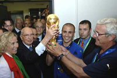

| ПРИВЕТ УЧАСТНИКАМ СОРЕВНОВАНИЙ! | |
|---|---|
ФУТБОЛФУТБОЛ— командный вид спорта, в котором целью является забить мяч в ворота соперника ногами или другими частями тела (кроме рук) большее количество раз, чем команда соперника. В настоящее время самый популярный и массовый вид спорта в мире. Есть 17 официальных правил игры, каждое из которых содержит список оговорок и руководящих принципов. Эти правила предназначены для применения на всех уровнях футбола, хотя есть некоторые изменения для таких групп, как юниоры, взрослые, женщины и люди с ограниченными физическими возможностями. Законы очень часто формулировались в общих чертах, которые позволяют упростить их применения в зависимости от характера игры. Правила игры публикуются в ФИФА, но поддерживаются Международным советом футбольных ассоциаций (IFAB). |
|
| ГЛАВНОЕ НЕ ПОБЕДА, А УЧАСТИЕ! | |